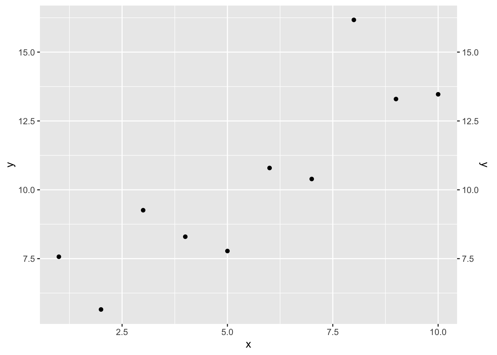
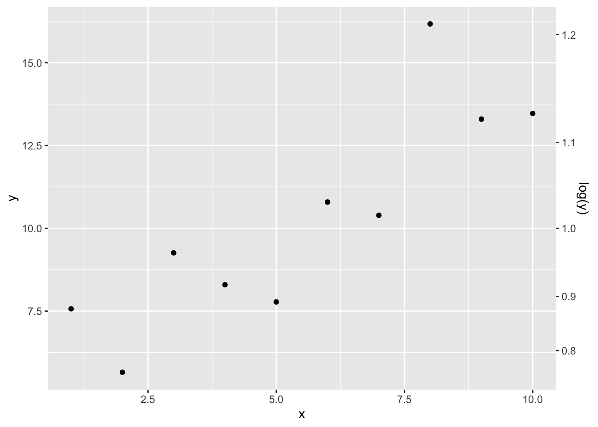
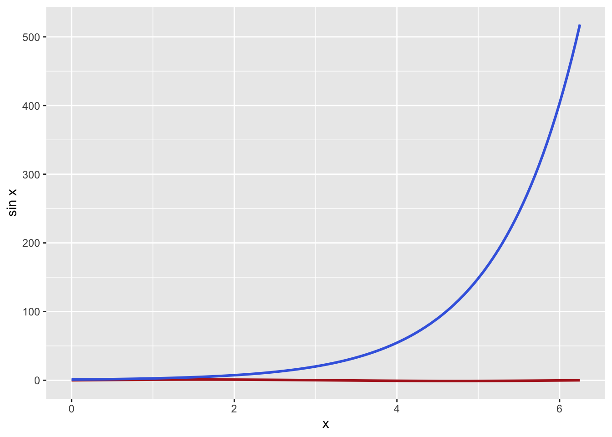
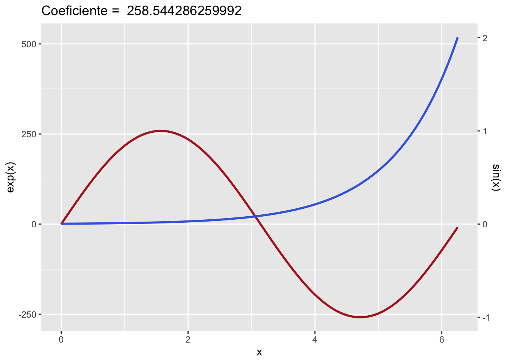

Nesta postagem vou ensinar a gerar gráficos com dois eixos y ou dois eixos x como o abaixo:
Code
library(ggplot2)#| fig-cap: Exemplo de gráfico com dois eixos x e dois eixos y#| fig-cap-location: margin#| echo:false#| tidy:trueexample <-ggplot(data = mpg, aes(x = displ , y = hwy)) +geom_point() +theme_bw()+scale_y_continuous(sec.axis =sec_axis(~ . /100, name="Y/100")) +scale_x_continuous(sec.axis =sec_axis(~ . /100, name ="X/100")) +labs(x ="Valor de X",y ="Valor de Y")
O que é um eixo secundário?
Eixos secundários são comuns em gráficos para comparar duas ou mais variáveis dependentes ao longo de uma terceira variável independente. São úteis para a visualização de monitoramento de várias métricas com unidades diferentes ou para a comparação de duas variáveis que não são necessariamente relacionadas ou estão na mesma grandeza.
Alguns dos softwares de planilha que tem funcionalidades para criação de gráficos mais acessíveis possuem em seus menus a opção de adicionar um eixo y secundário.
Como fazer eixos secundários no ggplot2?
A documentação oficial do ggplot2:: dá alguns exemplos simples de como criar um eixo secundário y ou x (Specify a secondary axis)
Porém a documentação não abrange todas as funcionalidades possíveis então nessa postagem vou buscar explorar mais as possibilidades de configurações de eixos secundários.
Gráfico exemplo
Code
library(ggplot2)dataframe <-data.frame(x =1:10,y =1:10+rnorm(10, mean =4, sd =2))p <-ggplot(data = dataframe) +aes(x = x, y = y) +geom_point()p
Gráfico base criado com valores aleatórios.
O gráfico acima é (p) é apenas a base para as próximas customizações.
De acordo com os exemplos na documentação, basta adicionar a função para configurar a escala do eixo y (ou x) ao gráfico original e com o argumento sec.axis especificar as configurações do segundo eixo. Usando dup_axis() como valor para o argumento, apenas será duplicado o eixo y do lado esquerdo para o direito. Porém usando o valor sec.axis()
Code
p +scale_y_continuous(sec.axis =dup_axis())p +scale_y_continuous(sec.axis =sec_axis(~log10(.), name="log(y)"))

(a) dup_axis()

(b) sec_axis(~ log10(y))
Figura 1: Adição de eixos y secundários no lado direito.
Veja que ao criar um eixo secundário usando sec_axis() é possível aplicar uma transformação na escala do eixo. No exemplo acima foi aplicado a transformação \(\log_{10} y\) porem podem ser aplicadas outras transformações lineares, como multiplicação, exponenciação, soma, divisão etc.
Exemplo mais complexo
Nos exemplos acima apenas criei um gráfico com os dois eixos mas sem os dados relacionados ao eixo y do lado direito portanto abaixo irei especificar melhor os usos dos dois eixos.
Code
x <-seq(from =0, to =2*pi , by =0.05)df <-data.frame(x = x,seno =sin(x),exponencial =exp(x))p <-ggplot(df, aes(x = x)) +geom_line(aes(y = seno), color ="firebrick", linewidth =1) +geom_line(aes(y = exponencial), color ="royalblue", linewidth =1) +labs(y ="sin x")p

Função seno vs função exponencial
Acima se observa um gráfico com duas linhas, uma representando, uma função seno (vermelho), e outra função exponencial (azul), porém mal se percebe a “ondulação” da função seno por estar com uma amplitude aparente tão pequena em relação à função exponencial. Nesses casos que se é interessante utilizar o eixo secundário para comparar a variação entre as duas séries de dados.
Porém só criar o eixo secundário não significa que os dados irão automaticamente ser mapeados à nova escala criada. Como assim?
Os valores dos dados e os valores da escala são independentes, então é necessário que sejam transformados individualmente. Isso precisa ser feito ‘manualmente’, portanto é necessário transformar os dados de uma das séries de dados através de uma transformação linear.
Esta transformação linear não é nada mais do que mapear os dados
Figura 2: Utilização de um coeficiente com valor constante para transformar os dados e a escala do eixo secundário.
Por exemplo, aplicando a multiplicação dos valores da função \(\sin(x)\) por um coeficiente com valor 2500, (linha 4) os valores das duas funções irão se aproximar. Porém ao mesmo tempo eu preciso dividir a minha escala do eixo secundário pelo mesmo coeficiente (2500) para que os valores exibidos na escala sejam os antes da transformação (linha 7).
A Figura 2 é um exemplo completo de como utilizar o coeficiente para transformar os dados.
Porém definir coeficientes manualmente é uma tarefa repetitiva e em alguns casos não muito intuitiva. Portanto podemos tentar definir o coeficiente de forma programática.
Calculando o coeficiente ideal
Nos exemplos anteriores chegamos em um coeficiente razoável de forma manual, testando valores e chegamos no valor de 2500 como sendo bom o suficiente para a aplicação.
Para calcularmos um coeficiente de forma programática podemos escrever uma função, que aceita todos os dados e nos retorna um valor, baseado em operações aritmméticas.
Acima é demostrada uma função que calcula o coeficiente baseado nos valores máximos e mínimos das variáveis dadas a ela. O coeficiente calculado pela função tem o valor 258.5442863 e se utilizado para refazer o gráfico percebe-se que as duas curvas se sobrepõem de forma mais normalizada.
Code
ggplot(df, aes(x = x)) +geom_line(aes(y = seno * coeficiente_calculado), color ="firebrick", linewidth =1) +geom_line(aes(y = exponencial), color ="royalblue", linewidth =1) +scale_y_continuous(sec.axis =sec_axis(~ . / coeficiente_calculado, name="sin(x)")) +labs(y ="exp(x)", title =paste("Coeficiente = ", coeficiente_calculado))

Porém o desafio é implementar o cálculo do coeficiente diretamente na construção do gráfico e também há o problema da ordem das variáveis na função.P
Adequação da função de cálculo dos coeficientes
Da forma que a função foi construída o cálculo do coeficiente é feito da seguinte forma:
Portanto se os valores da \(Var_2\) apresentarem uma amplitude maior do que a amplitude dos valores da \(Var_1\) o valor do coeficiente será positivo enquanto o inverso irá resultar em um coeficiente maior que zero e menor que 1 (\(0<coef<1\)), o que resultaria no gráfico abaixo, logo, a ordem das variáveis é importante no momento de executar a função.
Code
# ordem das variáveis invertidacoef2 <-calcular_coeficiente(df, exponencial, seno)ggplot(df, aes(x = x)) +geom_line(aes(y = seno * coef2), color ="firebrick", linewidth =1) +geom_line(aes(y = exponencial), color ="royalblue", linewidth =1) +scale_y_continuous(sec.axis =sec_axis(~ . / coef2, name="sin(x)")) +labs(y ="exp(x)", title =paste("Coeficiente = ", coef2))
Para resolver isso pode-se adicionar um bloco na função calcular_coeficiente() que verifica se \(0<coef<1\) e inverter o valor se necessário, essa função nova será chamada: calcular_coeficiente_smart().
Agora independente da ordem das variáveis passadas à função o coeficiente calculado será sempre o valor esperado. Mas ainda falta implementar isso diretamente no gráfico.
Implementação dos coeficientes no gráfico
O que está faltando agora para finalizar o processo é criar uma função única para criar o gráfico com dois eixos. É possível fazer isso através de uma função única onde são passados o dataframe e as duas variáveis como argumentos e o output seria o gráfico completo.
Uma função que faz todas as operações automaticamente
Nessa função também deve se implementar o cálculo do coeficiente de forma a melhorar a legibilidade e tornar mais fácil para o usuário utilizar a função. Para criar essa função, o usar o código já escrito para calcular o coeficiente será usado.
Executando a função criada acima com os argumentos necessários
A função criada retorna automaticamente o gráfico com os dois eixos, com nomes e cores predefinidas mas com a o coeficiente calculado adequadamente. É possível transformar as customizações do gráfico em argumentos da função (como cores das linhas ou até que tipo de geom deverá ser usado), porém o aumento da complexidade da função não é o principal a se explorar no momento.
O que pode se explorar é que da mesma forma que foi criado um eixo y secundário, também pode ser criado um eixo x secundário, exatamente da mesma forma. Inclusive, é possível utilizar a função que foi criada para o gráfico de dois eixos y e adicionar novos elementos ao gráfico como linhas de referência usando geom_vline e geom_hline.